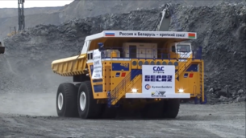
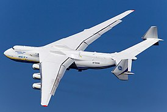
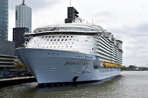

{{text4}} БелАЗ-75710 — полноприводный двухосный карьерный самосвал грузоподъёмностью 450 тонн производства Белорусского автомобильного завода[1][2]. Самый большой карьерный самосвал в мире, первая модель в новом классе машин особо большой грузоподъёмности. Представлен в сентябре 2013 года, а в январе 2014 года установил рекорд Гиннесса в странах Европы и Содружества Независимых Государств (СНГ), провезя по испытательному полигону груз весом в 503,5 тонны. Карьерный самосвал общей массой 840,5 тонн предназначен для перевозки грузов в сложных условиях глубоких карьеров по технологическим дорогам при температуре воздуха от −50 до +50 °C. Самосвал имеет восемь колёс (четыре двускатных) с радиальными бескамерными шинами самого большого доступного размера, каждое из которых выдерживает нагрузку до 105 тонн. Силовая установка — дизель-электрическая, состоящая из двух дизельных двигателей, электрогенераторов и мотор-колёс. Шасси - Основа грузовика состоит из главной рамы и поворотных устройств для мостов, установленных на ней; сварку рамы производят на Минском станкостроительном заводе из высокопрочной стали Weldox 800. Опорно-поворотные устройства мостов по строению сходны с поворотной платформой экскаватора и включают трёхрядные роликовые подшипники диаметром 2,75 м. Каждый мост поворачивают два гидроцилиндра: один толкает, другой — тянет; мосты поворачиваются по отдельности — сначала полностью поворачивается передний, потом (при необходимости) доворачивается и задний. При мостах, повёрнутых в крайнее положение, радиус поворота по отпечатку внешнего колеса составляет 19,8 м. На случай отказа гидрооборудования предусмотрены пневмогидроаккумуляторы рулевого управления. Давления в шести ёмкостях хватает на один поворот мостов из одного крайнего положения в противоположное. Предполагается, что водитель в аварийной ситуации сможет съехать на обочину и остановиться. Установленные на самосвале радиальные бескамерные шины производства компании Michelin имеют размер 59/80R63 и вес 5,5 тонны — на момент постройки грузовика самые большие в мире. Каждый мост оснащён двумя пневмогидравлическими цилиндрами подвески, а также двумя стойками стабилизаторов поперечной устойчивости — что необычно для карьерной техники. Стабилизаторы применены не только для плавности хода, но и для повышения боковой устойчивости от опрокидывания[1][2].
{{text5}} Ан-225 «Мрия» (укр. Мрія: «Мечта», по кодификации НАТО: англ. Cossack «Казак») — транспортный реактивный самолёт сверхбольшой грузоподъёмности разработки ОКБ имени О. К. Антонова. Был самым большим и грузоподъёмным самолётом за всю историю мировой авиацииПерейти к разделу «#Рекорды самолёта». Самолёт был спроектирован и построен в СССР в единственном экземпляре на Киевском механическом заводе (руководитель проекта — В. И. Толмачёв) в 1984—1988 годах[5][6]. Первый полёт был совершён 21 декабря 1988 года. Изначально было заложено две машины; только один экземпляр находился в лётном состоянии и эксплуатировался украинской компанией Antonov Airlines. В СССР имел бортовой номер СССР-82060, после распада СССР перешёл в собственность Украины и получил бортовой номер UR-82060. Второй экземпляр не достроен. Единственный лётный экземпляр разрушен в ангаре 25 февраля 2022 года в боях за аэропорт «Антонов» в ходе военного вторжения России на Украину. Сообщается, что Антонов начал строить новую "Мрию", в том числе из обломков старого самолета. Впервые поднялся в небо 21 декабря 1988 года с заводского аэродрома опытно-конструкторского бюро имени О. К. Антонова. Полёт продолжался полтора часа (с 12:15 до 13:45)[9]. При том, что самолёт создавался в СССР для перевозки компонентов ракет-носителей «Энергия» и космического корабля «Буран», к моменту окончания строительства первого Ан-225 все необходимые перевозки были выполнены самолётом ВМ-Т «Атлант». В программе «Буран» Ан-225 поучаствовал, только перевезя «Буран» на Парижский авиасалон в мае 1989 года и совершив несколько показательных полётов на Байконуре в апреле 1991 года. После распада СССР единственный летающий экземпляр самолёта в 1994 году прекратил полёты, с него были сняты двигатели и другое оборудование для использования в «Русланах»[10]. Впрочем, к 2000-м годам в нём появилась потребность, и его восстановили силами украинских предприятий. Также авиалайнер подвергся доработке, чтобы соответствовать стандартам самолётов для гражданской авиации[11][12]. 23 мая 2001 года были выданы сертификаты типа на Ан-225 «Мрия» Авиационным регистром Межгосударственного авиационного комитета (АР МАК) и Государственным департаментом авиационного транспорта Украины («Укравиатранс»), что позволило начать коммерческое использование самолёта в качестве перевозчика грузов. Ан-225 был зарегистрирован на Украине, выполнял коммерческие грузовые перевозки в составе авиатранспортного подразделения АНТК имени О. К. Антонова — авиакомпании Antonov Airlines. В период с 10 по 15 мая 2016 года «Мрия» совершила перелёт из Украины в Австралию, совершив по пути 4 промежуточные посадки — в аэропорту имени Вацлава Гавела (Прага, Чехия), аэропорту Туркменбаши (Туркменистан), Международном аэропорту имени Раджива Ганди (Хайдарабад, Индия) и аэропорту Куала-Лумпур (Куала-Лумпур, Малайзия). 15 мая самолёт приземлился в аэропорту австралийского города Перт[13]. Дальность перелёта составила свыше 15,5 тысяч км[14]. Его грузом был 117-тонный генератор фирмы Brush SEM (англ.)рус.. 14 ноября 2016 года «Мрия» приземлилась в бразильском аэропорту Виракопус[15]. Самолёт доставил в Сантьяго изготовленную в Бразилии компанией ABB электротурбину весом 155 тонн (общий вес груза — 182 тонны)[16][17], что представляет собой рекорд для Южной Америки[16].
{{text6}} Harmony of the Seas — круизное судно класса Oasis. Является третьим по счёту после Oasis of the Seas (2009) и Allure of the Seas (2010) (четвёртое судно было построено в 2018 году). Круизное судно являлось самым большим в мире до постройки четвертого судна серии — Symphony of the Seas — его длина составляет 362 м (на два метра больше, чем длина Allure of the Seas). 25 октября 2012 года компания Royal Caribbean объявила, что будет строить третье судно класса Oasis. Строительство началось 27 декабря 2012 года. 19 июня 2015 года судно было спущено на воду. Ходовые испытания корабля начались 10 марта 2016 года[4]. В первый круиз судно отправилось 15 мая 2016 года[5][6][7]. 6 ноября 2016 лайнер отправился в свой первый рейс из нового порта приписки — Эверглейдс, Флорида[8]. 362-метровое судно способно вместить более 6000 пассажиров и около 2200 членов экипажа. Harmony of the Seas имеет различные каюты, начиная от небольших комнат до люксов, некоторые из которых оснащены настенными экранами (именуемые «виртуальные балконы»), которые показывают то, что находится вокруг судна. Эти экраны были впервые установлены на круизных судах класса Quantum. Самые крупные из кают, классифицируемые как Королевские апартаменты, Коронные апартаменты и небесные апартаменты, простираются в высоту на две палубы и названы «Loft Suites». В первом сезоне Harmony of the Seas предложит семидневный круиз по Средиземному морю, из Барселоны в Рим. В конце летнего сезона судно будет пересекать Атлантический океан в США, где оно будет предлагать семиночные восточные и западные круизы по Карибскому морю, из порта Эверглейдс[en]*, Форт Лодердейл в штате Флорида.